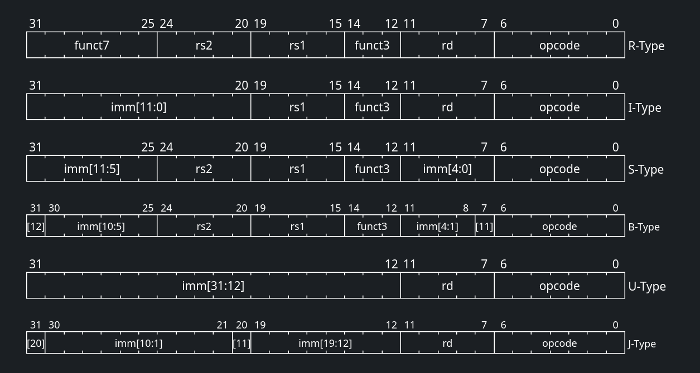
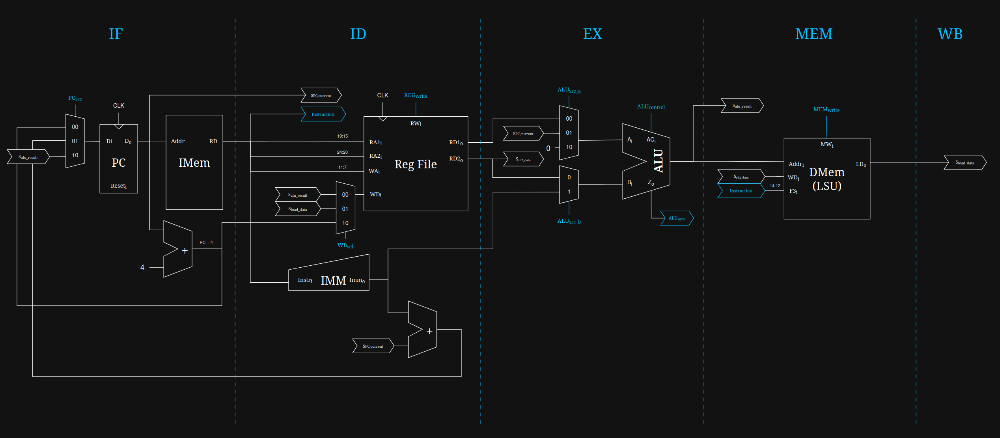

Microarquitetura Monociclo (Single-Cycle)
A microarquitetura de ciclo único (Single-Cycle) é a implementação mais direta e fundamental do processador RISC-V. O seu princípio de funcionamento é simples: cada instrução é buscada, decodificada e totalmente executada em um único pulso de relógio.
Embora não seja a abordagem mais eficiente em termos de frequência máxima (devido ao longo caminho crítico), é a base pedagógica perfeita para compreender a interação entre as instruções da ISA RV32I e o hardware digital.
1. A Anatomia da Instrução
O núcleo RISC-V (RV32I) processa instruções de 32 bits. Para simplificar a decodificação em hardware, os campos da instrução possuem posições fixas ou altamente regulares. Uma instrução típica de 32 bits é fatiada da seguinte forma:
| Campo | Bits | Descrição |
|---|---|---|
opcode |
[6:0] |
Indica a categoria ou formato da instrução (ex: R-Type, I-Type, Load, Store). É o sinal vital para a Unidade de Controle. |
rd |
[11:7] |
Endereço do registrador de destino (Destination), onde o resultado da operação será guardado. |
funct3 |
[14:12] |
Subcódigo de operação (3 bits) utilizado para diferenciar operações dentro do mesmo opcode (ex: distinguir ADD de SUB, ou tipos de saltos condicionais). |
rs1 |
[19:15] |
Endereço do registrador de origem 1 (Source 1). |
rs2 |
[24:20] |
Endereço do registrador de origem 2 (Source 2). |
funct7 |
[31:25] |
Subcódigo adicional (7 bits) usado em instruções do tipo R para especificar ainda mais a operação. |
1.1. Formatos de Instruções
Para acomodar diferentes necessidades (operações matemáticas, acessos à memória e saltos), as instruções são divididas em 6 formatos básicos:
-
Tipo-R (Register): Usado para operações aritméticas e lógicas onde todos os operandos são registradores (ex:
ADD,SUB,AND). -
Tipo-I (Immediate): Usado para operações com imediatos curtos (12 bits), instruções de Load (leitura de memória) e o salto
JALR. -
Tipo-S (Store): Usado exclusivamente para escrever na memória (ex:
SW,SB). O imediato de 12 bits é dividido em duas partes para manterrs1ers2em seus lugares fixos. -
Tipo-B (Branch): Usado para saltos condicionais (
BEQ,BNE). Muito semelhante ao Tipo-S, mas o imediato codifica múltiplos de 2 (visto que as instruções são alinhadas na memória). -
Tipo-U (Upper Immediate): Usado para carregar imediatos longos (20 bits) nos bits mais significativos de um registrador (
LUI,AUIPC). -
Tipo-J (Jump): Usado para saltos incondicionais longos (
JAL).

2. O Gerador de Imediatos (ImmGen)
Ao olhar para os formatos acima, você pode notar que os imediatos (valores constantes embutidos na instrução) nos formatos S, B e J parecem estar "embaralhados". Isso não é um erro; é uma escolha de design intencional.
Por que embaralhar os bits?
Se o RISC-V mantivesse o imediato contínuo no formato S, os bits referentes ao registrador rs2 teriam que mudar de lugar. Ao manter rs1 e rs2 fixos, o hardware pode começar a ler os registradores do Register File no exato instante em que a instrução chega, sem ter que esperar a Unidade de Controle descobrir qual é o formato da instrução. Isso economiza tempo precioso de hardware!
O ImmGen (Gerador de Imediatos) é o componente de hardware responsável por desembaralhar esses bits e reconstruir o número original de 32 bits. Ele faz isso em duas etapas:
-
Extração e Reconstrução: Lendo o
opcode, o ImmGen sabe qual é o formato da instrução e reconecta os fios (bits) na ordem correta. -
Extensão de Sinal: Como a maioria das operações precisa de 32 bits, o ImmGen copia o bit mais significativo do imediato original (que sempre fica no bit 31 da instrução) para preencher os bits restantes à esquerda, preservando o sinal (positivo ou negativo) em complemento de 2.
3. O Caminho de Dados (Datapath)
O Datapath é o "músculo" do processador. É o circuito de potência responsável por rotear os dados, realizar os cálculos e interagir com a memória. Em um processador monociclo, o fluxo de dados atravessa cinco fases lógicas sequenciais dentro do mesmo pulso de clock:

O endereço atual da instrução, armazenado no Program Counter (PC), é enviado para a Memória de Instruções (IMEM). A memória retorna a instrução de 32 bits a ser executada. Ao mesmo tempo, um somador paralelo calcula PC + 4 para apontar para a próxima instrução sequencial.
A instrução é fatiada. Os campos rs1 e rs2 são enviados ao Register File (Banco de Registradores) para ler os operandos. Simultaneamente, o Gerador de Imediatos (ImmGen) extrai e estende o sinal de qualquer valor imediato embutido na instrução, formatando-o para 32 bits.
A Unidade Lógica e Aritmética (ALU) entra em ação. Dependendo da instrução, ela pode calcular operações matemáticas (soma, subtração, lógica AND/OR), calcular endereços de memória para operações de Load/Store, ou realizar comparações para instruções de desvio (Branch).
Se a instrução for um Load ou Store, o resultado gerado pela ALU é utilizado como endereço para acessar a Memória de Dados (DMEM). Dados são lidos ou escritos neste estágio. Para outras instruções, esta fase é ignorada.
O resultado final — seja proveniente da ALU, da Memória de Dados ou do cálculo de um salto — é roteado de volta e escrito no registrador de destino (rd) dentro do Register File.
Tempo de Propagação
Na arquitetura monociclo (single-cycle), toda instrução deve atravessar o datapath completo dentro de um único ciclo de clock. Assim, o período mínimo de clock é determinado pelo maior tempo de propagação combinacional ao longo do circuito — o chamado caminho crítico. Consequentemente, a frequência máxima do processador fica limitada por esse atraso. Mais adiante será discutido o uso de pipeline, que divide o datapath em estágios menores para reduzir o comprimento do caminho crítico e permitir frequências de operação mais altas.
3.1. Banco de Registradores
O banco de registradores (Register File) é a estrutura de memória interna mais rápida do processador, composto por 32 registradores de 32 bits, definidos em hardware através do tipo t_reg_array. A sua implementação técnica divide-se em abordagens distintas para leitura e escrita:
- Leitura Assíncrona: O módulo possui duas portas de leitura independentes (
rs1ers2) que funcionam de forma puramente combinacional. Assim que os endereçosReadAddr1_iouReadAddr2_isão alterados, os dados correspondentes surgem quase instantaneamente nas saídasReadData1_oeReadData2_o, sem aguardar pelo pulso de clock. - Escrita Síncrona: Diferente da leitura, a atualização de um registrador exige sincronização. A escrita apenas ocorre na transição positiva do sinal de clock (
rising_edge(clk_i)), e exclusivamente se o sinal de controleRegWrite_iestiver ativo ('1'). - Proteção de Hardware do Registro
x0: A convenção da arquitetura RISC-V dita que o registradorx0deve conter sempre o valor constante zero. O hardware garante esta regra forçando a saídax"00000000"sempre que o endereço de leitura for"00000". Paralelamente, no processo de escrita, existe uma barreira lógica (WriteAddr_i /= "00000") que ignora silenciosamente qualquer tentativa de alteração do registrador zero.
3.2. Unidade Lógica e Aritmética
A Unidade Lógica e Aritmética (ULA, ou ALU em inglês) é o motor computacional do processador, operando em conjunto com o seu controlador dedicado.
-
O Controlador da ULA (
alu_control): a Unidade de Controle Principal delega a decisão exata da operação matemática aoalu_control. Este módulo secundário avalia o sinalALUOp_ide 2 bits (que indica a categoria da instrução) cruzando-o com os camposFunct3_ieFunct7_i. O resultado é a geração de um sinal de controle otimizado de 4 bits (ALUControl_o). Por exemplo, para operações R-Type (ALUOp_i = "10"), o módulo verifica o bit 5 doFunct7_ipara alternar entre uma soma e uma subtração, ou entre deslocamentos lógicos e aritméticos. -
A Unidade de Execução (
alu): o móduloalu.vhdé um bloco puramente combinacional que reage imediatamente a qualquer mudança nos operandosA_i,B_iou no comandoALUControl_i. Suporta um vasto leque de operações, incluindo:- Aritméticas: Soma e subtração nativas (com tratamento de sinais).
- Comparações: Avaliações de "menor que" com e sem sinal (SLT e SLTU).
- Lógicas: Operações bit-a-bit XOR, OR e AND.
- Deslocamentos (Shifts): Deslocamentos à esquerda (SLL), à direita lógicos (SRL) e à direita aritméticos (SRA).
Flag Zero
A par do resultado de 32 bits, a ALU gera continuamente uma flag fundamental: o sinal Zero_o. Esta flag assume o valor '1' estritamente quando o resultado numérico de toda a operação de 32 bits for igual a zero (x"00000000").
3.3. Unidade de Branch
Em muitas arquiteturas clássicas, o cálculo do desvio condicional é fundido na Unidade de Controle Principal. No entanto, este núcleo RISC-V foi desenhado isolando esta responsabilidade na branch_unit, tornando o código mais modular e coeso.
Para decidir se o processador deve saltar para um novo endereço de memória, a branch_unit correlaciona três sinais de entrada: o sinal que confirma que a instrução é um desvio (Branch_i), a flag matemática gerada pela ULA (ALU_Zero_i) e o campo Funct3_i que dita a regra de salto.
Com base nisto, a unidade emite o sinal BranchTaken_o:
- BEQ (Branch if Equal): Requer que os operandos sejam iguais (A - B = 0). O desvio é tomado se
ALU_Zero_i = '1'. - BNE (Branch if Not Equal): O desvio avança se a subtração gerar um valor diferente de zero (
ALU_Zero_i = '0'). - Outras avaliações: O módulo aplica lógicas análogas para
BLT,BGE,BLTUeBGEU, combinando a flag zero resultante de operaçõesSLT/SLTUexecutadas pela ALU.
4. A Unidade de Controle (Control Path)
Se o Datapath é o músculo, a Unidade de Controle é o cérebro. O seu papel é observar o opcode, o funct3 e o funct7 da instrução e emitir os sinais de comando que configuram os multiplexadores, habilitam as memórias e dizem à ALU o que fazer.
Em vez de declarar dezenas de sinais soltos, o nosso projeto em VHDL utiliza uma abordagem estruturada e elegante através de um record VHDL (t_control). O pacote s_ctrl encapsula todos os sinais diretivos:
-
Branch/Jump: Determinam se o próximo PC seráPC+4ou um endereço de salto calculado pela ALU. -
MemRead/MemWrite: Habilitam a leitura ou escrita na Memória de Dados. -
ALUSrc: Um seletor de multiplexador que decide se a ALU vai operar com o registradorrs2ou com um Imediato estendido. -
RegWrite: Habilita a gravação do resultado final no Register File. -
ResultSrc: Decide qual dado vai para a fase de Write-Back (resultado da ALU, dado da memória, ouPC+4).
ALU Control
A Unidade de Controle é frequentemente dividida em duas. A Unidade Principal (Main Control) lê o opcode e emite um sinal genérico chamado ALUOp. Um decodificador secundário (ALU Control) cruza esse ALUOp com o funct3 e funct7 para gerar o sinal de seleção final da operação da ALU, otimizando o tamanho do hardware gerado.
4.1. Sinais de Controle
| Instrução | Opcode |
RegWrite |
ALUSrc |
MemtoReg |
MemRead |
MemWrite |
Branch |
Jump |
ALUOp |
|---|---|---|---|---|---|---|---|---|---|
R-TYPE (add, sub) |
0110011 |
1 | 0 | 0 | 0 | 0 | 0 | 0 | 10 |
LOAD (lw) |
0000011 |
1 | 1 | 1 | 1 | 0 | 0 | 0 | 00 |
STORE (sw) |
0100011 |
0 | 1 | X | 0 | 1 | 0 | 0 | 00 |
BRANCH (beq) |
1100011 |
0 | 0 | X | 0 | 0 | 1 | 0 | 01 |
I-TYPE (addi) |
0010011 |
1 | 1 | 0 | 0 | 0 | 0 | 0 | 00 |
JAL (jal) |
1101111 |
1 | X | 0 | 0 | 0 | 0 | 1 | XX |
JALR (jalr) |
1100111 |
1 | 1 | 0 | 0 | 0 | 0 | 1 | 00 |
LUI (lui) |
0110111 |
1 | 1 | 0 | 0 | 0 | 0 | 0 | 00 |
AUIPC (auipc) |
0010111 |
1 | 1 | 0 | 0 | 0 | 0 | 0 | 00 |
4.2. Operação da ALU
ALUOp_i (Entrada) |
funct7 (Entrada) |
funct3 (Entrada) |
ALUControl_o (Saída) |
Operação da ULA | Motivo |
|---|---|---|---|---|---|
"00" |
X (ignorado) | X (ignorado) | "0000" |
ADD | Para LW/SW/ADDI, a ULA sempre soma. |
"01" |
X (ignorado) | X (ignorado) | "1000" |
SUB | Para Branch, a ULA sempre subtrai para comparar. |
"10" |
0000000 |
000 |
"0000" |
ADD | Instrução R-Type: ADD |
"10" |
0100000 |
000 |
"1000" |
SUB | Instrução R-Type: SUB |
"10" |
0000000 |
001 |
"0001" |
SLL | Instrução R-Type: SLL |
"10" |
0000000 |
010 |
"0010" |
SLT | Instrução R-Type: SLT |
"10" |
0000000 |
011 |
"0011" |
SLTU | Instrução R-Type: SLTU |
"10" |
0000000 |
100 |
"0100" |
XOR | Instrução R-Type: XOR |
"10" |
0000000 |
101 |
"0101" |
SRL | Instrução R-Type: SRL |
"10" |
0100000 |
101 |
"1101" |
SRA | Instrução R-Type: SRA |
"10" |
0000000 |
110 |
"0110" |
OR | Instrução R-Type: OR |
"10" |
0000000 |
111 |
"0111" |
AND | Instrução R-Type: AND |
"11" |
X (ignorado) | X (ignorado) | "XXXX" |
Indefinido | Combinação de ALUOp não utilizada. |
5. Integração no Top-Level
O arquivo processor_top.vhd representa a cápsula mais externa do núcleo RISC-V. Este módulo implementa uma Arquitetura de Harvard Modificada, expondo barramentos separados para a Memória de Instruções (IMEM) e para a Memória de Dados (DMEM). Esta topologia permite que a CPU busque a próxima instrução em simultâneo com a leitura ou escrita de dados na memória.
Pipelined
A existência de dois barramentos separados - um para instruções e outro para dados - é necessário para viabilizar uma microarquitetura pipelined. Apesar de, na multiciclo, não apresentar nenhum ganho real.
É neste arquivo que ocorre a união estrutural entre os dois grandes blocos do sistema:
-
A Comunicação Ascendente (Feedback): O Datapath (circuito de potência) envia para o Control Path (circuito de comando) a instrução de 32 bits recém-buscada na IMEM (
s_instruction) e flags cruciais, como a flag matemática de zero (s_alu_zero), essencial para resolver os saltos condicionais (Branches). -
A Comunicação Descendente (Comando): A Unidade de Controle analisa a instrução e emite o pacote completo de diretrizes através do record
t_control. Este sinal é injetado de volta no Datapath para orquestrar o ciclo completo.
A união entre o U_CONTROLPATH e o U_DATAPATH conclui o processador de ciclo único, formando um núcleo coeso capaz de executar o conjunto de instruções RV32I.